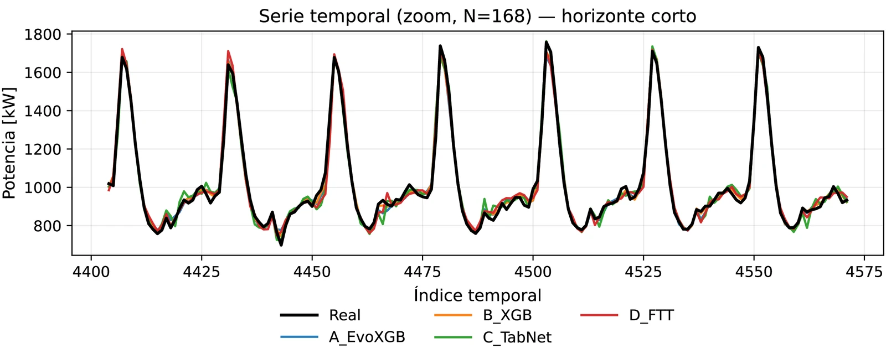

PARAMO Ecuador Results Explorer
Explorador público para el caso nacional de 24 barras de Ecuador y un demostrador de 6 barras, con resultados de expansión, operación, hidrología, costos, emisiones y confiabilidad.
Soy ingeniero, investigador y consultor energético con experiencia en sistemas eléctricos de potencia, proyectos energéticos y educación superior. Mi trayectoria profesional incluye coordinación, ejecución y fiscalización de infraestructura eléctrica, facilidades de superficie, mantenimiento y puesta en marcha de proyectos de generación. En el ámbito académico trabajo en planificación y operación de sistemas eléctricos, expansión de generación y transmisión, integración de renovables, optimización, pronóstico de demanda, alta tensión y métodos computacionales aplicados.
Profesor de la Carrera de Electricidad de la ESPOCH y Coordinador de la Maestría en Energías Renovables y Sostenibilidad Energética. Doctor en Ingeniería Eléctrica, mención Energía y Potencia, por la ESPOL.

Mi trabajo abarca desde la planificación de largo plazo de sistemas eléctricos hasta la ingeniería eléctrica aplicada, combinando optimización, simulación, análisis de datos y validación experimental.
Expansión de generación y transmisión, embalses, reconductoring, incertidumbre y trayectorias de política.
Compensación reactiva, seguridad de red, flexibilidad y condiciones de operación.
Pronóstico de demanda, machine learning y análisis computacional reproducible.
Alta tensión, electrónica de potencia, energías renovables y microrredes.
Proyectos con resultados públicos o en desarrollo activo.
Explorador público para el caso nacional de 24 barras de Ecuador y un demostrador de 6 barras, con resultados de expansión, operación, hidrología, costos, emisiones y confiabilidad.
Plataforma utilizada en Planificación y Operación de Sistemas Eléctricos de Potencia para trabajar con teoría, datos, optimización, AMPL y análisis técnico asistido por IA.
Framework de planificación de largo plazo para sistemas eléctricos hidrodependientes, desarrollado a partir de mi investigación en expansión de generación y transmisión, incertidumbre hidrológica, embalses y reconductoring.
Dos ejemplos actuales de mi trabajo académico: pronóstico de demanda eléctrica y el proyecto de ingeniería comunitaria ESPOCH-ONE en Licto.

Validación temporal rodante de XGBoost, EvoXGB, TabNet y FT-Transformer utilizando demanda horaria de subestaciones.

Proyecto IEEE Tech4Good para implementar un sistema automático de cloración y la infraestructura eléctrica necesaria para el suministro rural de agua potable en Licto.